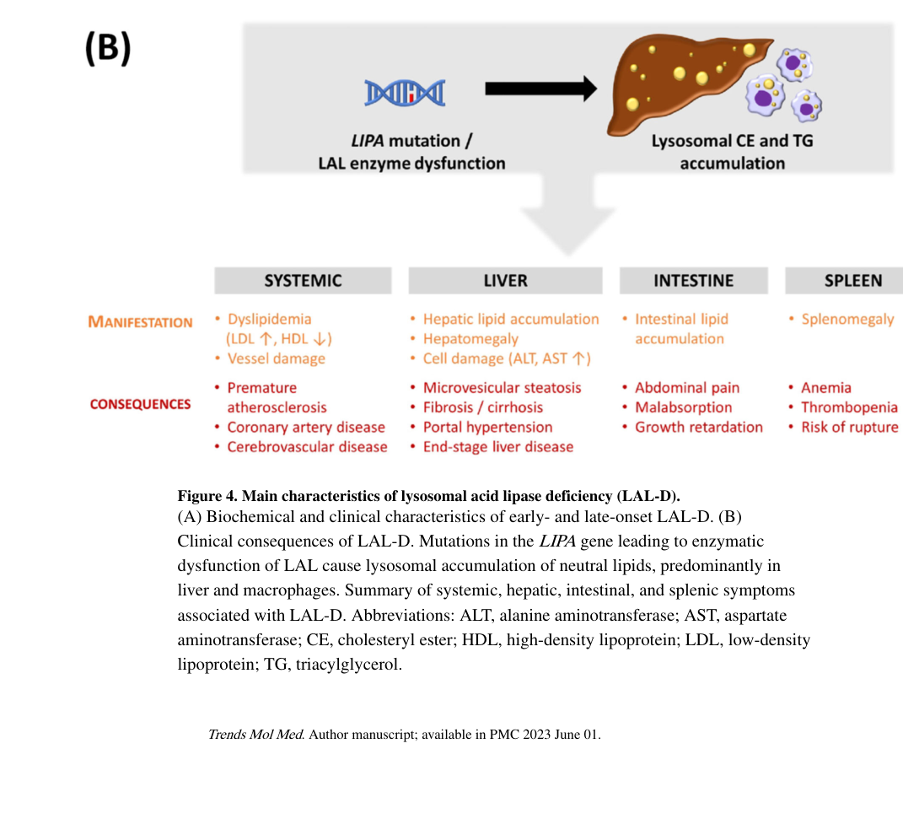

Question: You are an expert researcher providing comprehensive, well-cited information.
Provide detailed information focusing on: 1. Key concepts and definitions with current understanding 2. Recent developments and latest research (prioritize 2023-2024 sources) 3. Current applications and real-world implementations 4. Expert opinions and analysis from authoritative sources 5. Relevant statistics and data from recent studies
Format as a comprehensive research report with proper citations. Include URLs and publication dates where available. Always prioritize recent, authoritative sources and provide specific citations for all major claims.
Disease Characteristics Research Template
Target Disease
- Disease Name: Cholesteryl Ester Storage Disease
- MONDO ID: (if available)
- Category: Mendelian
Research Objectives
Please provide a comprehensive research report on Cholesteryl Ester Storage Disease covering all of the disease characteristics listed below. This report will be used to populate a disease knowledge base entry. Be thorough and cite primary literature (PMID preferred) for all claims.
For each section, suggested databases/resources are listed. These are the first places you should search for information on each topic.
1. Disease Information
Search first: OMIM, Orphanet, ICD-10/ICD-11, MeSH, PubMed
- What is the disease? Provide a concise overview.
- What are the key identifiers? (OMIM, Orphanet, ICD-10/ICD-11, MeSH, Mondo)
- What are the common synonyms and alternative names?
- Is the information derived from individual patients (e.g., EHR) or aggregated disease-level resources?
2. Etiology
- Disease Causal Factors: What are the primary causes? (genetic, environmental, infectious, mechanistic)
- Risk Factors:
Search first: PubMed, Cochrane Library, UpToDate, clinical guidelines, ClinVar, ClinGen, GWAS Catalog, PheGenI, CTD, CDC, WHO, epidemiological databases
- Genetic risk factors (causal variants, susceptibility loci, modifier genes)
- Environmental risk factors (toxins, lifestyle, occupational exposures, age, sex, family history)
- Protective Factors:
Search first: PubMed, Cochrane Library, clinical trial databases, GWAS Catalog, gnomAD, WHO, CDC, nutrition databases
- Genetic protective factors (protective variants, modifier alleles)
- Environmental protective factors (diet, lifestyle, exposures that reduce risk)
- Gene-Environment Interactions: How do genetic and environmental factors interact to influence disease?
Search first: CTD, PubMed, PheGenI, GxE databases
3. Phenotypes
Search first: HPO (Human Phenotype Ontology), OMIM, Orphanet, PubMed, clinicaltrials.gov, MedDRA, SNOMED CT, DECIPHER, LOINC
For each phenotype, provide: - Phenotype type: symptoms, clinical signs, physical manifestations, behavioral changes, or laboratory abnormalities
For symptoms/signs: HPO, OMIM, Orphanet, PubMed For behavioral changes: HPO, DSM, RDoC (Research Domain Criteria), PubMed For laboratory abnormalities: LOINC, SNOMED CT, LabTests Online, PubMed - Phenotype characteristics: Search first: OMIM, Orphanet, HPO, PubMed - Age of symptom onset (neonatal, childhood, adult-onset, late-onset) - Symptom severity (mild, moderate, severe, variable) - Symptom progression (stable, progressive, episodic, fluctuating) - Frequency among affected individuals (percentage or qualitative) - Quality of life impact: Effects on daily functioning and well-being (per-phenotype when possible) Search first: EQ-5D database, SF-36, WHO QOL databases, PubMed - Suggest HPO (Human Phenotype Ontology) terms for each phenotype
4. Genetic/Molecular Information
- Causal Genes: Gene mutations or chromosomal abnormalities responsible for disease (gene symbols, OMIM IDs)
Search first: OMIM, ClinVar, HGMD, Ensembl, NCBI Gene
- Pathogenic Variants:
- Affected genes (gene symbols, HGNC IDs) > Search first: OMIM, NCBI Gene, Ensembl, HGNC, UniProt, GeneCards
- Variant classification (pathogenic, likely pathogenic, VUS per ACMG/AMP guidelines) > Search first: ClinVar, ClinGen, ACMG/AMP guidelines, VarSome
- Variant type/class (missense, frameshift, nonsense, splice-site, structural)
- Allele frequency in population databases > Search first: gnomAD, 1000 Genomes, ExAC, TOPMed, dbSNP
- Somatic vs germline origin > Search first: COSMIC (somatic), ClinVar, ICGC, TCGA
- Functional consequences (loss of function, gain of function, dominant negative)
- Modifier Genes: Genes that modify disease severity or expression
- Epigenetic Information: DNA methylation, histone modifications, chromatin changes affecting disease
Search first: ENCODE, Roadmap Epigenomics, MethBase, DiseaseMeth
- Chromosomal Abnormalities: Large-scale genetic changes (aneuploidy, translocations, inversions)
Search first: DECIPHER, ClinVar, ECARUCA, UCSC Genome Browser
5. Environmental Information
- Environmental Factors: Non-genetic contributing factors (toxins, radiation, pollution, occupational exposure)
Search first: CTD (Comparative Toxicogenomics Database), TOXNET, PubMed, EPA databases
- Lifestyle Factors: Behavioral factors (smoking, diet, exercise, alcohol consumption)
Search first: CDC databases, WHO, PubMed, NHANES
- Infectious Agents: If applicable, pathogens causing or triggering disease (bacteria, viruses, fungi, parasites)
Search first: NCBI Taxonomy, ViPR, BV-BRC, MicrobeDB, GIDEON
6. Mechanism / Pathophysiology
- Molecular Pathways: Specific signaling cascades or biochemical pathways involved (Wnt, MAPK, mTOR, PI3K-AKT, etc.)
Search first: KEGG, Reactome, WikiPathways, PathBank, BioCyc
- Cellular Processes: Cell-level mechanisms (apoptosis, autophagy, cell cycle dysregulation, inflammation, etc.)
Search first: Gene Ontology (GO), Reactome, KEGG, PubMed
- Protein Dysfunction: How protein structure or function is altered (misfolding, aggregation, loss of function, gain of function)
Search first: UniProt, PDB (Protein Data Bank), InterPro, Pfam, AlphaFold
- Metabolic Changes: Alterations in metabolic processes (energy metabolism, lipid metabolism, amino acid metabolism)
Search first: KEGG, BioCyc, HMDB (Human Metabolome Database), BRENDA
- Immune System Involvement: Role of immune response (autoimmunity, immunodeficiency, chronic inflammation)
Search first: ImmPort, Immunome Database, IEDB, Gene Ontology
- Tissue Damage Mechanisms: How tissues/ are injured (oxidative stress, ischemia, fibrosis, necrosis)
Search first: PubMed, Gene Ontology, Reactome
- Biochemical Abnormalities: Specific molecular defects (enzyme deficiencies, receptor dysfunction, ion channel defects)
Search first: BRENDA, UniProt, KEGG, OMIM, PubMed
- Epigenetic Changes: DNA methylation, histone modifications affecting gene expression in disease
Search first: ENCODE, Roadmap Epigenomics, MethBase, DiseaseMeth
- Molecular Profiling (if available):
- Transcriptomics/gene expression changes > Search first: GEO (Gene Expression Omnibus), ArrayExpress, GTEx, Human Cell Atlas, SRA
- Proteomics findings > Search first: PRIDE, ProteomeXchange, Human Protein Atlas, STRING, BioGRID
- Metabolomics signatures > Search first: MetaboLights, Metabolomics Workbench, HMDB, METLIN
- Lipidomics alterations > Search first: LIPID MAPS, SwissLipids, LipidHome, Metabolomics Workbench
- Genomic structural features > Search first: UCSC Genome Browser, Ensembl, NCBI, dbVar, DGV
- Advanced Technologies (if applicable):
- Single-cell analysis findings (cell-type specific mechanisms, cellular heterogeneity) > Search first: Human Cell Atlas, Single Cell Portal, GEO, CELLxGENE
- Spatial transcriptomics findings > Search first: GEO, Spatial Research, Vizgen, 10x Genomics data
- Multi-omics integration results > Search first: TCGA, ICGC, cBioPortal, LinkedOmics, PubMed
- Functional genomics screens (CRISPR, RNAi) > Search first: DepMap, GenomeRNAi, PubMed, BioGRID ORCS
For each mechanism, describe: - The causal chain from initial trigger to clinical manifestation - Which mechanisms are upstream vs downstream - What cell types and biological processes are involved - Suggest GO terms for biological processes and CL terms for cell types
7. Anatomical Structures Affected
- Organ Level:
- Primary organs directly affected
- Secondary organ involvement (complications, secondary effects)
- Body systems involved (cardiovascular, nervous, digestive, respiratory, endocrine, etc.)
Search first: Uberon, FMA (Foundational Model of Anatomy), OMIM, HPO, ICD-11, MeSH, SNOMED CT
- Tissue and Cell Level:
- Specific tissue types affected (epithelial, connective, muscle, nervous)
- Specific cell populations targeted (with Cell Ontology terms)
Search first: Uberon, Human Protein Atlas, Cell Ontology, Human Cell Atlas, CellMarker, PanglaoDB
- Subcellular Level:
- Cellular compartments involved (mitochondria, nucleus, ER, lysosomes) (with GO Cellular Component terms)
Search first: Gene Ontology (Cellular Component), UniProt, Human Protein Atlas
- Localization:
- Specific anatomical sites (with UBERON terms) > Search first: FMA, Uberon, NeuroNames (for brain), SNOMED CT
- Lateralization (unilateral, bilateral, asymmetric) > Search first: HPO, clinical literature, imaging databases
8. Temporal Development
- Onset:
- Typical age of onset (congenital, pediatric, adult, geriatric)
- Onset pattern (acute, subacute, chronic, insidious)
Search first: OMIM, Orphanet, HPO, PubMed
- Progression:
- Disease stages (early, intermediate, advanced, end-stage) > Search first: Cancer Staging Manual (AJCC), WHO classifications, PubMed
- Progression rate (rapid, slow, variable)
- Disease course pattern (episodic, relapsing-remitting, progressive, stable)
- Disease duration (self-limited, chronic lifelong)
Search first: Disease registries, longitudinal cohort databases, natural history studies, PubMed, Orphanet, OMIM
- Patterns:
- Remission patterns (spontaneous, treatment-induced) > Search first: Clinical trial databases, disease registries, PubMed
- Critical periods (time windows of vulnerability or opportunity for intervention) > Search first: PubMed, developmental biology databases, clinical guidelines
9. Inheritance and Population
- Epidemiology:
- Prevalence (cases per 100,000 at given time)
- Incidence (new cases per 100,000 per year)
Search first: Orphanet, CDC, WHO, GBD (Global Burden of Disease), national registries, SEER, disease registries
- For Genetic Etiology:
- Inheritance pattern (AD, AR, X-linked, mitochondrial, multifactorial, polygenic) > Search first: OMIM, Orphanet, ClinVar, GTR (Genetic Testing Registry)
- Penetrance (complete, incomplete, age-dependent) > Search first: ClinVar, OMIM, PubMed, ClinGen
- Expressivity (variable, consistent) > Search first: OMIM, ClinVar, PubMed
- Genetic anticipation (increasing severity in successive generations) > Search first: OMIM, PubMed (especially for repeat expansion disorders)
- Germline mosaicism > Search first: ClinVar, OMIM, genetic counseling literature, PubMed
- Founder effects (population-specific mutations) > Search first: gnomAD, population genetics databases, PubMed
- Consanguinity role > Search first: OMIM, population studies, genetic counseling resources
- Carrier frequency > Search first: gnomAD, carrier screening databases, GeneReviews, GTR
- Population Demographics:
- Affected populations (ethnic or demographic groups with higher prevalence) > Search first: gnomAD, 1000 Genomes, PAGE Study, PubMed, population registries
- Geographic distribution (endemic areas, regional variation) > Search first: WHO, CDC, GBD, Orphanet, geographic epidemiology databases
- Geographic distribution of specific variants
- Sex ratio (male:female) > Search first: Disease registries, OMIM, PubMed, epidemiological databases
- Age distribution of affected individuals > Search first: CDC, disease registries, SEER, Orphanet
10. Diagnostics
- Clinical Tests:
- Laboratory tests (blood, urine, tissue chemistry, specific enzyme assays) > Search first: LOINC, LabTests Online, PubMed
- Biomarkers (proteins, metabolites, genetic markers, circulating biomarkers) > Search first: FDA Biomarker List, BEST (Biomarkers, EndpointS, and other Tools), PubMed
- Imaging studies (X-ray, CT, MRI, PET, ultrasound) > Search first: RadLex, DICOM, Radiopaedia, imaging databases
- Functional tests (pulmonary function, cardiac stress tests) > Search first: LOINC, clinical guidelines, PubMed
- Electrophysiology (EEG, EMG, ECG, nerve conduction studies) > Search first: LOINC, clinical neurophysiology databases, PubMed
- Biopsy findings (histopathology, immunohistochemistry) > Search first: SNOMED CT, College of American Pathologists resources, PubMed
- Pathology findings (microscopic examination) > Search first: SNOMED CT, Digital Pathology databases, PubMed
- Genetic Testing:
Search first: GTR (Genetic Testing Registry), GeneReviews, ClinGen
- Overview of recommended genetic testing approach
- Whole genome sequencing (WGS) utility > Search first: GTR, ClinVar, GEL (Genomics England), gnomAD
- Whole exome sequencing (WES) utility > Search first: GTR, ClinVar, OMIM, GeneMatcher
- Gene panels (which panels, which genes) > Search first: GTR, ClinVar, laboratory-specific databases
- Single gene testing > Search first: GTR, ClinVar, OMIM, GeneReviews
- Chromosomal microarray (CMA) > Search first: DECIPHER, ClinVar, dbVar, ECARUCA
- Karyotyping > Search first: Chromosome Abnormality Database, ClinVar, cytogenetics resources
- FISH > Search first: ClinVar, cytogenetics databases, PubMed
- Mitochondrial DNA testing > Search first: MITOMAP, MSeqDR, ClinVar, GTR
- Repeat expansion testing > Search first: GTR, ClinVar, repeat expansion databases, PubMed
- Omics-Based Diagnostics (if applicable):
- RNA sequencing / transcriptomics > Search first: GEO, ArrayExpress, GTEx, RNA-seq databases
- Proteomics > Search first: PRIDE, ProteomeXchange, FDA Biomarker database
- Metabolomics > Search first: MetaboLights, Metabolomics Workbench, HMDB
- Epigenomics > Search first: GEO, ENCODE, Roadmap Epigenomics, MethBase
- Liquid biopsy > Search first: COSMIC, ClinVar, liquid biopsy databases, PubMed
- Clinical Criteria:
- Standardized diagnostic criteria (DSM, ICD, society guidelines) > Search first: DSM-5, ICD-11, clinical society guidelines, UpToDate
- Differential diagnosis (other conditions to rule out, with distinguishing features) > Search first: DynaMed, UpToDate, clinical decision support systems
- Screening:
- Screening methods for asymptomatic individuals (newborn screening, carrier screening, cascade screening) > Search first: ACMG recommendations, CDC newborn screening, GTR
11. Outcome/Prognosis
- Survival and Mortality:
- Survival rate (5-year, 10-year, overall) > Search first: SEER, cancer registries, disease-specific registries, PubMed
- Life expectancy (with and without treatment if applicable) > Search first: Orphanet, disease registries, actuarial databases, PubMed
- Mortality rate > Search first: CDC, WHO, GBD, national mortality databases
- Disease-specific mortality (deaths directly attributable to disease) > Search first: Disease registries, CDC Wonder, GBD, PubMed
- Morbidity and Function:
- Morbidity (disease-related disability and health impacts) > Search first: GBD, WHO, disability databases, PubMed
- Disability outcomes (long-term functional impairments) > Search first: ICF (International Classification of Functioning), disability registries
- Quality of life measures (EQ-5D, SF-36, PROMIS, disease-specific tools) > Search first: EQ-5D database, SF-36, PROMIS, PubMed
- Disease Course:
- Complications (secondary problems: infections, organ failure, etc.) > Search first: ICD codes, disease registries, clinical databases, PubMed
- Recovery potential (likelihood and extent of recovery, with vs without treatment) > Search first: Natural history studies, rehabilitation databases, PubMed
- Prediction:
- Prognostic factors (age, disease severity, biomarkers, treatment response) > Search first: Prognostic models databases, clinical calculators, PubMed
- Prognostic biomarkers (molecular markers predicting disease course) > Search first: FDA Biomarker database, PubMed, cancer prognostic databases
12. Treatment
- Pharmacotherapy:
- Pharmacological treatments (drug names, drug classes, mechanisms of action) > Search first: DrugBank, RxNorm, ATC classification, DailyMed, FDA databases
- Pharmacogenomics (how genetic variants affect drug metabolism, efficacy, toxicity) > Search first: PharmGKB, CPIC (Clinical Pharmacogenetics), FDA Table of PGx Biomarkers
- Advanced Therapeutics:
- Gene therapy (viral vectors, CRISPR, gene replacement, gene editing) > Search first: ClinicalTrials.gov, FDA gene therapy database, ASGCT resources
- Cell therapy (stem cell transplant, CAR-T, cellular therapeutics) > Search first: ClinicalTrials.gov, FDA cell therapy database, FACT standards
- RNA-based therapies (ASOs, siRNA, mRNA therapies) > Search first: ClinicalTrials.gov, FDA approvals, PubMed
- Targeted therapies (treatments directed at specific molecular targets) > Search first: My Cancer Genome, OncoKB, ClinicalTrials.gov, FDA approvals
- Immunotherapies (checkpoint inhibitors, monoclonal antibodies) > Search first: Cancer Immunotherapy Database, FDA approvals, ClinicalTrials.gov
- Surgical and Interventional:
- Surgical interventions (types of surgery, timing, outcomes) > Search first: CPT codes, surgical registries, clinical guidelines, PubMed
- Supportive and Rehabilitative:
- Supportive care (symptom management, pain control, nutrition) > Search first: Clinical guidelines, Cochrane Library, PubMed
- Rehabilitation (physical therapy, occupational therapy, speech therapy) > Search first: Rehabilitation medicine databases, clinical guidelines, PubMed
- Experimental:
- Experimental treatments in clinical trials (with NCT identifiers if available) > Search first: ClinicalTrials.gov, EU Clinical Trials Register, WHO ICTRP
- Treatment Outcomes:
- Treatment response rates > Search first: Clinical trial databases, FDA reviews, systematic reviews, PubMed
- Side effects and adverse events > Search first: FDA Adverse Event Reporting System (FAERS), MedWatch, PubMed
- Treatment Strategy:
- Treatment algorithms (clinical pathways, decision trees) > Search first: Clinical practice guidelines, NCCN Guidelines, UpToDate
- Combination therapies > Search first: ClinicalTrials.gov, treatment guidelines, PubMed
- Personalized medicine approaches (genotype-guided treatment) > Search first: My Cancer Genome, CIViC, PharmGKB, precision medicine databases
For each treatment, suggest MAXO (Medical Action Ontology) terms where applicable.
13. Prevention
- Prevention Levels:
- Primary prevention (preventing disease occurrence: vaccination, risk factor modification) > Search first: CDC, WHO, USPSTF recommendations, Cochrane Library
- Secondary prevention (early detection and treatment: screening programs, early intervention) > Search first: USPSTF, CDC screening guidelines, WHO
- Tertiary prevention (preventing complications in those with disease) > Search first: Clinical guidelines, disease management protocols, PubMed
- Immunization: Vaccine strategies (if applicable)
Search first: CDC vaccine schedules, WHO immunization, FDA vaccine database
- Screening and Early Detection:
- Screening programs (population-based: newborn screening, cancer screening) > Search first: CDC screening programs, USPSTF, cancer screening databases
- Genetic screening (carrier screening, preimplantation genetic diagnosis, prenatal testing) > Search first: ACMG recommendations, ACOG guidelines, GTR
- Risk stratification (identifying high-risk individuals for targeted prevention) > Search first: Risk prediction models, clinical calculators, PubMed
- Behavioral Interventions: Lifestyle modifications to reduce risk
Search first: CDC, WHO, behavioral intervention databases, Cochrane Library
- Counseling: Genetic counseling (risk assessment, family planning guidance)
Search first: NSGC resources, ACMG guidelines, GeneReviews
- Public Health:
- Public health interventions (sanitation, vector control, health education) > Search first: CDC, WHO, public health databases, PubMed
- Environmental interventions (reducing environmental risk factors) > Search first: EPA databases, WHO environmental health, PubMed
- Prophylaxis: Preventive medications or procedures
Search first: Clinical guidelines, FDA approvals, PubMed
14. Other Species / Natural Disease
- Taxonomy: Species affected (with NCBI Taxon identifiers)
Search first: NCBI Taxonomy
- Breed: Specific breeds affected (with VBO identifiers if applicable)
Search first: VBO (Vertebrate Breed Ontology)
- Gene: Orthologous genes in other species (with NCBI Gene IDs)
Search first: NCBI Gene
- Natural Disease:
- Naturally occurring disease in other species (companion animals, wildlife) > Search first: OMIA (Online Mendelian Inheritance in Animals), VetCompass, PubMed
- Veterinary relevance and importance in animal health > Search first: OMIA, veterinary databases, PubMed
- Comparative Biology:
- Comparative pathology (similarities and differences across species) > Search first: OMIA, comparative pathology databases, PubMed
- Evolutionary conservation of disease mechanisms > Search first: HomoloGene, OrthoMCL, Alliance of Genome Resources
- Transmission (if applicable):
- Zoonotic potential > Search first: CDC zoonotic diseases, WHO zoonoses, GIDEON
- Cross-species susceptibility > Search first: NCBI Taxonomy, veterinary databases, PubMed
15. Model Organisms
- Model Types:
- Model organism type (mammalian, invertebrate, cellular, in vitro) > Search first: Alliance of Genome Resources, model organism databases
- Specific model systems (mouse, rat, zebrafish, Drosophila, C. elegans, yeast, cell lines, organoids, iPSCs) > Search first: MGI, RGD, ZFIN, FlyBase, WormBase, SGD, ATCC, Cellosaurus
- Induced models (drug treatment, surgical intervention, environmental manipulation) > Search first: MGI, model organism databases, PubMed
- Genetic Models:
- Types available (knockout, knock-in, transgenic, conditional, humanized) > Search first: MGI, IMPC, KOMP, EuMMCR, IMSR
- Model Characteristics:
- Phenotype recapitulation (how well model reproduces human disease features) > Search first: Model organism databases, comparative studies, PubMed
- Model limitations (aspects of human disease not captured) > Search first: Model organism databases, PubMed, review articles
- Applications:
- Research applications (what aspects of disease can be studied) > Search first: Model organism databases, PubMed
- Resources:
- Model databases > Search first: MGI, RGD, ZFIN, FlyBase, WormBase, IMSR, EMMA, MMRRC
Citation Requirements
- Cite primary literature (PMID preferred) for all mechanistic and clinical claims
- Prioritize recent reviews and landmark papers
- Include direct quotes from abstracts where possible to support key statements
- Distinguish evidence source types: human clinical, model organism, in vitro, computational
Output Format
Structure your response as a comprehensive narrative organized by the sections above. For each section, provide: - Factual content with specific details (numbers, percentages, gene names, variant nomenclature) - Ontology term suggestions (HPO, GO, CL, UBERON, CHEBI, MAXO, MONDO) where applicable - Evidence citations with PMIDs - Direct quotes from abstracts to support key claims - Clear indication when information is not available or not applicable for this disease
This report will be used to populate a disease knowledge base entry with: - Pathophysiology descriptions with causal chains - Gene/protein annotations (HGNC, GO terms) - Phenotype associations (HP terms) with frequencies - Cell type involvement (CL terms) - Anatomical locations (UBERON terms) - Chemical entities (CHEBI terms) - Treatment annotations (MAXO terms) - Evidence items with PMIDs and exact abstract quotes - Epidemiology, prognosis, diagnostic, and prevention information - Animal model descriptions with phenotype recapitulation details
Comprehensive Disease Characteristics Research Report: Cholesteryl Ester Storage Disease (CESD)
Target disease: Cholesteryl Ester Storage Disease (CESD) (later-onset phenotype of lysosomal acid lipase deficiency, LAL-D)
Category: Mendelian (autosomal recessive)
MONDO ID: MONDO:0019149 (OpenTargets Search: Cholesteryl ester storage disease,Lysosomal acid lipase deficiency-LIPA)
Executive summary (current understanding; 2023–2024 emphasis)
Cholesteryl ester storage disease (CESD) is the later-onset clinical presentation of lysosomal acid lipase deficiency (LAL-D), caused by biallelic pathogenic variants in LIPA leading to partial reduction of lysosomal acid lipase activity (heras2024practicalrecommendationsfor pages 2-4, korbelius2023recentinsightsinto pages 3-4). Deficient lysosomal hydrolysis of LDL-derived cholesteryl esters and triglycerides leads to lysosomal lipid trapping and downstream dyslipidemia and chronic liver injury, with risk of fibrosis/cirrhosis and premature atherosclerotic cardiovascular disease (korbelius2023recentinsightsinto pages 1-3, heras2024practicalrecommendationsfor pages 2-4, lam2024liverdirectedaavgene pages 1-2). Since 2015, disease-specific therapy with sebelipase alfa (recombinant human LAL) has changed management; multiple clinical trials and long-term follow-up studies exist (e.g., N Engl J Med 2015 PMID: 26352813) (korbelius2023recentinsightsinto pages 12-13). In 2024, liver-directed AAV gene therapy demonstrated broad correction and survival benefit in Lipa−/− mice, supporting an active translational pipeline beyond enzyme replacement (lam2024liverdirectedaavgene pages 1-2, lam2024liverdirectedaavgene pages 8-9).
1. Disease information
1.1 What is the disease?
CESD is the later-onset phenotype of LAL-D (historically “cholesteryl ester storage disease”), typically diagnosed in childhood or adulthood and characterized by chronic liver injury and/or abnormal lipid profiles (heras2024practicalrecommendationsfor pages 1-2, heras2024practicalrecommendationsfor pages 2-4). It contrasts with infantile-onset LAL-D (Wolman disease), which has near-complete loss of enzyme activity and rapidly progressive systemic disease (heras2024practicalrecommendationsfor pages 1-2, heras2024practicalrecommendationsfor pages 2-4).
Primary literature-supported definition (review abstract quote): - Korbelius et al. (Trends Mol Med, 2023-06-01) states: “Mutations in the LAL-encoding LIPA gene lead to rare lysosomal lipid storage disorders with complete or partial absence of LAL activity” and emphasizes that “Early detection of LAL deficiency (LAL-D) is essential for disease management and survival.” (korbelius2023recentinsightsinto pages 1-3)
1.2 Key identifiers
- MONDO: MONDO:0019149 (cholesteryl ester storage disease) (OpenTargets Search: Cholesteryl ester storage disease,Lysosomal acid lipase deficiency-LIPA)
- OMIM (disease entry): OMIM 278000 (LAL-D; includes CESD and Wolman disease phenotypes) (heras2024practicalrecommendationsfor pages 1-2, korbelius2023recentinsightsinto pages 1-3)
- OMIM (gene): LIPA = MIM*613497 (heras2024practicalrecommendationsfor pages 2-4)
Not found in retrieved full-text evidence set (reporting limitation): ICD-10/ICD-11 codes, Orphanet ID, and MeSH IDs were not available in the retrieved documents; these should be added from external terminologies during knowledgebase ingestion.
1.3 Synonyms / alternative names
- Cholesteryl ester storage disease (CESD) (historical name) (heras2024practicalrecommendationsfor pages 1-2, nedelcu2024lysosomalacidlipase pages 1-2)
- Later-onset LAL-D / childhood- or adult-onset LAL-D (heras2024practicalrecommendationsfor pages 1-2, korbelius2023recentinsightsinto pages 3-4)
1.4 Evidence source type
This report is derived from aggregated disease-level resources (recent reviews and expert recommendations) plus primary clinical trial publications (via PMIDs listed in reviews) and a 2024 preclinical gene therapy study (korbelius2023recentinsightsinto pages 12-13, lam2024liverdirectedaavgene pages 1-2). A small number of human case reports/case series appear in 2024 literature (e.g., Cureus case report) (nedelcu2024lysosomalacidlipase pages 1-2).
2. Etiology
2.1 Disease causal factors
Genetic cause: biallelic pathogenic variants in LIPA cause reduced lysosomal acid lipase activity, impairing intralysosomal hydrolysis of cholesteryl esters and triglycerides from LDL particles (heras2024practicalrecommendationsfor pages 2-4). CESD corresponds to partial deficiency (often ~1–12% of normal activity), whereas infantile-onset disease is typically <1% activity (heras2024practicalrecommendationsfor pages 2-4, korbelius2023recentinsightsinto pages 3-4).
Direct quote (2024 case-report abstract): - Nedelcu et al. (Cureus, 2024-11-08): “Lysosomal acid lipase deficiency (LAL-D) is an autosomal recessive genetic disease arising from mutations in the … (LIPA) gene, characterised by the formation of cholesterol esters and triglyceride storages, primarily in the liver and spleen.” (nedelcu2024lysosomalacidlipase pages 1-2)
2.2 Risk factors
- Primary risk: inheriting two pathogenic LIPA alleles (autosomal recessive) (heras2024practicalrecommendationsfor pages 2-4, korbelius2023recentinsightsinto pages 3-4).
- Clinical risk/enrichment contexts for case-finding: unexplained dyslipidemia and/or chronically elevated aminotransferases (korbelius2023recentinsightsinto pages 1-3, korbelius2023recentinsightsinto pages 3-4).
2.3 Protective factors
No protective genetic or environmental factors specific to CESD were identified in the retrieved evidence set.
2.4 Gene–environment interactions
No CESD-specific gene–environment interaction evidence was identified in the retrieved evidence set.
3. Phenotypes
3.1 Core phenotypes and characteristics (later-onset/CESD)
Korbelius et al. describe a very broad and nonspecific phenotype with common features including elevated aminotransferases, dyslipidemia with low HDL, hepatosplenomegaly, occasional gastrointestinal disturbances, and impaired neuron myelination (korbelius2023recentinsightsinto pages 3-4). Expert recommendations similarly emphasize chronic liver injury and/or lipid profile alterations in later-onset disease (heras2024practicalrecommendationsfor pages 1-2).
Age of onset: childhood to late adulthood; extreme diagnostic age range reported up to 80 years (korbelius2023recentinsightsinto pages 3-4).
Severity/progression: variable; later-onset form can progress to hepatic fibrosis/cirrhosis and premature cardiovascular disease (heras2024practicalrecommendationsfor pages 2-4).
Frequency among affected individuals: not quantitatively extractable from the retrieved excerpts; requires registry/cohort primary papers not fully available in-tool.
3.2 Quality-of-life impact
Not systematically reported in the retrieved evidence set. Clinically, chronic liver disease and dyslipidemia are expected to impact health and require ongoing specialty care (hepatology/lipidology), but validated QoL metrics (EQ-5D/SF-36/PROMIS) were not found.
3.3 Suggested HPO terms (mapping suggestions)
(Provided as ontology suggestions; not all are explicitly enumerated in the retrieved texts.) - Elevated serum transaminases: HP:0002910 (inferred from “elevated aminotransferases”) (korbelius2023recentinsightsinto pages 3-4) - Hepatomegaly: HP:0002240 (korbelius2023recentinsightsinto pages 3-4) - Splenomegaly: HP:0001744 (korbelius2023recentinsightsinto pages 3-4) - Dyslipidemia: HP:0003119 (korbelius2023recentinsightsinto pages 3-4) - Low HDL cholesterol: HP:0003234 (from “low HDL levels”) (korbelius2023recentinsightsinto pages 3-4) - Liver fibrosis: HP:0001395 / Cirrhosis: HP:0001394 (heras2024practicalrecommendationsfor pages 2-4, lam2024liverdirectedaavgene pages 1-2) - Atherosclerosis / premature cardiovascular disease: HP:0002639 (heras2024practicalrecommendationsfor pages 2-4, lam2024liverdirectedaavgene pages 1-2)
4. Genetic / molecular information
4.1 Causal gene
- LIPA (lipase A, lysosomal acid type) (heras2024practicalrecommendationsfor pages 1-2, heras2024practicalrecommendationsfor pages 2-4)
4.2 Pathogenic variant spectrum and notable variants
Korbelius et al. report 98 disease-causing and 22 predicted pathogenic LIPA mutations described across infant and adult LAL-D patients (korbelius2023recentinsightsinto pages 3-4).
Most common reported variant (CESD-enriched): - c.894G>A exon 8 splice junction mutation (E8SJM) is “about 50% of all reported cases” and encodes an enzyme with 2–4% residual activity, consistent with association with later-onset disease (korbelius2023recentinsightsinto pages 3-4).
Population allele frequency/statistical inference: - E8SJM allele frequency ≈ 1:300 in Caucasian and Hispanic populations, translating to predicted late-onset prevalence ≈ 1:130,000 in those groups (korbelius2023recentinsightsinto pages 3-4).
Variant types: splice variant (E8SJM); null variants around exon 8 (e.g., c.892C>T; c.894+1G>A) reported more frequently in infantile-onset disease (korbelius2023recentinsightsinto pages 3-4).
ACMG/ClinVar classifications and precise gnomAD allele frequencies: not available in the retrieved evidence set.
4.3 Modifier genes / epigenetics / chromosomal abnormalities
Not identified in the retrieved evidence set.
5. Environmental information
No specific environmental, lifestyle, or infectious triggers were identified as causal for CESD in the retrieved evidence. CESD is primarily a genetic lysosomal lipid storage disorder (heras2024practicalrecommendationsfor pages 2-4, nedelcu2024lysosomalacidlipase pages 1-2).
6. Mechanism / pathophysiology
6.1 Causal chain (upstream → downstream → clinical manifestations)
Upstream trigger: biallelic pathogenic variants in LIPA → reduced lysosomal acid lipase (LAL) activity (korbelius2023recentinsightsinto pages 1-3, heras2024practicalrecommendationsfor pages 2-4).
Cellular/biochemical defect: impaired lysosomal hydrolysis of lipoprotein-associated cholesteryl esters and triglycerides (korbelius2023recentinsightsinto pages 1-3).
Key downstream consequences:
- Lysosomal trapping of cholesteryl esters reduces lysosomal export of free cholesterol and fatty acids; lysosomal free cholesterol export involves NPC1/2 and normally regulates SREBP2/LDLR/HMG-CoA reductase pathways (korbelius2023recentinsightsinto pages 1-3).
- In LAL-D, cholesteryl esters “remain entrapped inside lysosomes,” driving “increased endogenous FA and cholesterol synthesis as well as VLDL secretion,” culminating in dyslipidemia (korbelius2023recentinsightsinto pages 1-3).
- Tissue lipid overload and macrophage involvement contribute to chronic inflammation and progressive liver disease (hepatosplenomegaly, fibrosis/cirrhosis), and chronic dyslipidemia contributes to accelerated atherosclerosis/cardiovascular risk (korbelius2023recentinsightsinto pages 3-4, lam2024liverdirectedaavgene pages 1-2).
Mechanistic note bridging to broader metabolic liver disease: LAL activity is decreased in NAFLD/NASH cohorts; the 2023 review summarizes multiple studies suggesting low serum LAL activity correlates with advanced liver disease/fibrosis (PMIDs listed in the review, e.g., PMID: 26288848) (korbelius2023recentinsightsinto pages 11-12).
6.2 Pathways (suggested ontology mappings)
Suggested GO biological process terms (mechanism-aligned suggestions): - Lysosomal lipid catabolic process (e.g., GO:0044242 lipid catabolic process; GO:0006629 lipid metabolic process) - Cholesterol homeostasis (e.g., GO:0042632) - Regulation of sterol biosynthetic process (e.g., GO:0050810) - Very-low-density lipoprotein particle assembly/secretion (related processes; implied by increased VLDL secretion) (korbelius2023recentinsightsinto pages 1-3) - Inflammatory response / macrophage activation (implied by mononuclear phagocyte involvement and inflammatory features) (heras2024practicalrecommendationsfor pages 2-4, lam2024liverdirectedaavgene pages 1-2)
Suggested Cell Ontology (CL) terms (tissue/cell targets; suggestions): - Hepatocyte (CL:0000182) (heras2024practicalrecommendationsfor pages 2-4) - Kupffer cell / liver macrophage (resident macrophages; explicitly referenced in liver biopsy discussion of LAL-D) (lam2024liverdirectedaavgene pages 1-2) - Monocyte/macrophage (CL:0000235, CL:0000860) (heras2024practicalrecommendationsfor pages 2-4)
6.3 Biochemical abnormalities (CHEBI suggestions)
- Cholesteryl ester (CHEBI class concept) and triglycerides (triacylglycerol) accumulation are core (nedelcu2024lysosomalacidlipase pages 1-2, korbelius2023recentinsightsinto pages 1-3).
6.4 Molecular profiling / omics
No CESD-specific transcriptomics/proteomics/metabolomics datasets were identified in the retrieved evidence set.
7. Anatomical structures affected
7.1 Organ level (primary and secondary)
Primary involvement includes liver and spleen (hepatosplenomegaly) and broader mononuclear phagocyte system; other sites include intestine/GI tract, adrenal glands, lymph nodes, bone marrow, and macrophages (korbelius2023recentinsightsinto pages 3-4, nedelcu2024lysosomalacidlipase pages 1-2).
Suggested UBERON terms (mapping suggestions): - Liver: UBERON:0002107 - Spleen: UBERON:0002106 - Intestine (small intestine): UBERON:0002108 - Adrenal gland: UBERON:0002369
7.2 Subcellular level
The primary affected compartment is the lysosome (GO cellular component suggestion: lysosome GO:0005764) because LAL is the “sole enzyme known to degrade neutral lipids in the lysosome” (korbelius2023recentinsightsinto pages 1-3).
8. Temporal development
8.1 Onset
Later-onset LAL-D/CESD can present in childhood or adulthood with variable latency; the 2023 review notes diagnosis can occur as late as age 80 (korbelius2023recentinsightsinto pages 3-4).
8.2 Progression
Progression is variable; later-onset disease can lead to hepatic fibrosis/cirrhosis and premature cardiovascular disease (heras2024practicalrecommendationsfor pages 2-4, lam2024liverdirectedaavgene pages 1-2).
9. Inheritance and population
9.1 Inheritance
- Autosomal recessive; caused by biallelic LIPA pathogenic variants (heras2024practicalrecommendationsfor pages 2-4, nedelcu2024lysosomalacidlipase pages 1-2).
9.2 Epidemiology (statistics)
- Overall prevalence estimates reported historically for LAL-D: 1:40,000 to 1:300,000 individuals (korbelius2023recentinsightsinto pages 3-4).
- Expert recommendations report later-onset prevalence approximately 1 per 300,000 individuals (heras2024practicalrecommendationsfor pages 2-4).
- For the common E8SJM variant (c.894G>A), allele frequency in Caucasians/Hispanics ≈ 1:300, implying predicted later-onset prevalence ≈ 1:130,000 in these populations (korbelius2023recentinsightsinto pages 3-4).
9.3 Population distribution
The review notes geographic/ethnic variability, with “lower risk” in East/South Asian, Finnish, and Ashkenazi populations, and higher risk in Caucasians and Hispanics (korbelius2023recentinsightsinto pages 3-4).
10. Diagnostics
10.1 Clinical testing and biomarkers
Gold-standard biochemical test: dried blood spot (DBS) measurement of LAL activity is recommended as rapid and minimally invasive for diagnosis/screening (korbelius2023recentinsightsinto pages 3-4, heras2024practicalrecommendationsfor pages 1-2).
Quantitative diagnostic thresholds (DBS): - <5% of mean normal enzyme activity: diagnostic for LAL-D (korbelius2023recentinsightsinto pages 3-4) - 5–10%: repeat testing + molecular sequencing before definite diagnosis (korbelius2023recentinsightsinto pages 3-4) - >10%: reported as “not affected” (korbelius2023recentinsightsinto pages 3-4)
Pre-analytic/analytic caveats: - Platelet count can impact DBS LAL activity determination (PMID: 28238812, cited in review) (korbelius2023recentinsightsinto pages 11-12). - Lalistat-2 is used in assays; review notes it may inhibit other neutral lipases but is unlikely to confound diagnosis given acidic pH/substrate choice (korbelius2023recentinsightsinto pages 3-4).
Genetic confirmation: identification of biallelic pathogenic LIPA variants (heras2024practicalrecommendationsfor pages 2-4).
10.2 Imaging and pathology
- Imaging clue (stronger for infantile form): adrenal calcifications detectable by X-ray/ultrasound/CT (heras2024practicalrecommendationsfor pages 2-4).
- Liver biopsy in LAL-D: micro- and macrovesicular steatosis involving Kupffer cells and hepatocytes, associated with fibrosis/cirrhosis progression (lam2024liverdirectedaavgene pages 1-2).
10.3 Differential diagnosis
Because clinical manifestations overlap with other liver and lipid disorders, differential diagnoses include: Niemann–Pick type B/C, Gaucher disease, NAFLD, familial hypercholesterolemia, and Fredrickson type 2b hyperlipoproteinemia (korbelius2023recentinsightsinto pages 3-4).
10.4 Screening strategies
Screening enriched cohorts using DBS (e.g., familial hypercholesterolemia phenotype without AD inheritance; cryptogenic liver disease with elevated transaminases) can identify index cases and enable cascade screening in relatives (korbelius2023recentinsightsinto pages 3-4).
11. Outcomes / prognosis
Later-onset disease is less rapidly fatal than infantile disease, but can lead to liver fibrosis/cirrhosis and accelerated atherosclerosis with premature cardiovascular disease; life expectancy is not well defined due to underdiagnosis and wide phenotype variability (heras2024practicalrecommendationsfor pages 2-4, korbelius2023recentinsightsinto pages 3-4, lam2024liverdirectedaavgene pages 1-2).
12. Treatment
12.1 Pharmacotherapy: enzyme replacement therapy
Sebelipase alfa (Kanuma®) is recombinant human LAL enzyme replacement therapy and is described as the only established specific therapy in the 2023 review; the 2024 case report notes EU authorization since 2015 (korbelius2023recentinsightsinto pages 1-3, nedelcu2024lysosomalacidlipase pages 1-2).
Key clinical trial / long-term evidence (PMIDs as listed in 2023 review): - Phase 3 trial: N Engl J Med 2015 PMID: 26352813 (korbelius2023recentinsightsinto pages 12-13) - 52-week study: J Hepatol 2014 PMID: 24993530 (korbelius2023recentinsightsinto pages 12-13) - Phase 2 extension (5-year experience): Liver Int 2020 PMID: 32657505 (korbelius2023recentinsightsinto pages 12-13) - ARISE final results: J Hepatol 2022 PMID: 34774639 (korbelius2023recentinsightsinto pages 12-13) - Long-term pediatric/adult outcomes: J Pediatr Gastroenterol Nutr 2022 PMID: 35442238 (korbelius2023recentinsightsinto pages 12-13) - Early adult study: Hepatology 2013 PMID: 23348766 (korbelius2023recentinsightsinto pages 12-13, NCT01307098 chunk 2)
2024 expert/practice perspective: - de las Heras et al. (Nutrients, 2024-12-13) emphasizes that when LAL-D is suspected, DBS enzyme testing is quickest/reliable and that prompt initiation of ERT is urgent in infantile disease; “improvements regarding the initial enzyme replacement therapy dose and careful nutritional treatment … leading to better outcomes” are noted as recent real-world practice evolution (heras2024practicalrecommendationsfor pages 1-2).
MAXO suggestions (treatment actions): - Enzyme replacement therapy: MAXO:0000768 (suggested) - Dietary lipid restriction/low-lipid diet (supportive nutritional intervention): (suggested; described as low-lipid diet in expert recommendations) (heras2024practicalrecommendationsfor pages 1-2)
12.2 Surgical / interventional
- Liver transplantation has been used in late-onset LAL-D with reported long-term outcome (Pediatr Transplant 2016 PMID: 27392817, cited in review) (korbelius2023recentinsightsinto pages 12-13).
- Hematopoietic stem cell transplantation (HSCT) has been used in infantile disease and in combination paradigms (Orphanet J Rare Dis 2021 PMID: 34020687, cited in review) (korbelius2023recentinsightsinto pages 12-13).
12.3 Experimental / advanced therapeutics (2023–2024)
Gene therapy (preclinical, 2024): Lam et al. (Molecular Therapy, accepted 2024-10-23; published in Dec 2024 issue; DOI: 10.1016/j.ymthe.2024.10.022) developed liver-directed AAV therapy (rscAAVrh74.LP1.LIPA). Reported outcomes in Lipa−/− mice included normalization of multiple disease measures and significant survival extension, with all treated mice surviving beyond untreated maximal lifespan (lam2024liverdirectedaavgene pages 1-2). The paper provides quantitative organomegaly context: at 24 weeks, untreated Lipa−/− mice had liver and spleen weights approximating 22.5% and 2% of body weight vs 4.75% and 0.34% in wild-type, illustrating profound baseline disease burden (lam2024liverdirectedaavgene pages 1-2). Later discussion emphasizes a cross-correction concept and highlights that liver-directed expression may mute immune responses relative to constitutive expression (lam2024liverdirectedaavgene pages 8-9).
12.4 Ongoing clinical trials / real-world implementation (ClinicalTrials.gov)
- NCT01307098 (Phase 1/2 adult study; sponsor Alexion): “Safety, Tolerability and Pharmacokinetics of SBC-102 (Sebelipase Alfa) in Adult Participants With Lysosomal Acid Lipase Deficiency” (initially posted 2011). The record cites the peer-reviewed publication (Hepatology 2013; DOI: 10.1002/hep.26289; PubMed listed in review as PMID: 23348766) (NCT01307098 chunk 2, korbelius2023recentinsightsinto pages 12-13).
ClinicalTrials.gov URL pattern: https://clinicaltrials.gov/study/NCT01307098 (not directly retrieved in tool output; identifier supported by record context) (NCT01307098 chunk 2).
13. Prevention
Because CESD is autosomal recessive, prevention focuses on genetic counseling, carrier testing in at-risk families, and early detection. Evidence in the retrieved set supports: - Targeted screening using DBS in enriched clinical cohorts after excluding autosomal dominant inheritance patterns (korbelius2023recentinsightsinto pages 3-4). - Cascade screening of first-degree relatives after an index case is identified (korbelius2023recentinsightsinto pages 3-4).
14. Other species / natural disease
No naturally occurring CESD/LAL-D in non-human species was identified in the retrieved evidence set.
15. Model organisms
Mouse models: systemic LAL-deficient mice phenotypically resemble late-onset disease with ~1-year lifespan, CE/TG accumulation, and multi-organ inflammation (korbelius2023recentinsightsinto pages 3-4). Important limitations include: (i) murine HDL-dominant lipoprotein physiology; and (ii) standard chow with ~0.02% cholesterol, which may attenuate apoB-CE burden relative to humans (korbelius2023recentinsightsinto pages 3-4).
Translational model use: Lipa−/− mice were used in 2024 to demonstrate efficacy of liver-directed AAV gene therapy and cross-correction, including survival curves and sustained serum activity measures (lam2024liverdirectedaavgene pages 1-2, lam2024liverdirectedaavgene pages 8-9).
Key visual evidence
A clinically oriented summary of the broad LAL-D phenotype spectrum (including later-onset/CESD manifestations) is provided in Korbelius et al. Figure 4B (korbelius2023recentinsightsinto media ecc10592).
Summary artifact: identifiers and core facts
The following table summarizes cross-references and “at-a-glance” facts for CESD/later-onset LAL-D.
Table (click to expand)
| Domain | CESD / later-onset LAL-D core fact | Evidence |
|---|---|---|
| Preferred disease name | Cholesteryl ester storage disease (historical term); currently considered the later-onset form of lysosomal acid lipase deficiency (LAL-D) | (heras2024practicalrecommendationsfor pages 1-2, korbelius2023recentinsightsinto pages 1-3) |
| Synonyms / alternative names | CESD; cholesteryl-ester storage disease; later-onset LAL-D; childhood/adult-onset LAL-D | (heras2024practicalrecommendationsfor pages 1-2, korbelius2023recentinsightsinto pages 1-3, nedelcu2024lysosomalacidlipase pages 1-2) |
| MONDO ID | MONDO:0019149 | (OpenTargets Search: Cholesteryl ester storage disease,Lysosomal acid lipase deficiency-LIPA) |
| OMIM | LAL-D / shared disease entry: OMIM 278000 | (heras2024practicalrecommendationsfor pages 1-2, korbelius2023recentinsightsinto pages 1-3) |
| Causal gene | LIPA (lipase A, lysosomal acid type); OMIM gene entry noted as LIPA MIM 613497 | (heras2024practicalrecommendationsfor pages 1-2, heras2024practicalrecommendationsfor pages 2-4) |
| Inheritance | Autosomal recessive; caused by biallelic pathogenic variants in LIPA | (heras2024practicalrecommendationsfor pages 1-2, heras2024practicalrecommendationsfor pages 2-4, nedelcu2024lysosomalacidlipase pages 1-2) |
| Enzyme defect / residual activity | Deficiency of lysosomal acid lipase (LAL); later-onset disease typically retains about 1%–12% of normal LAL activity, with older review language noting up to ~10% residual activity | (heras2024practicalrecommendationsfor pages 2-4, korbelius2023recentinsightsinto pages 1-3, korbelius2023recentinsightsinto pages 3-4) |
| Key pathobiology | Impaired intralysosomal hydrolysis of cholesteryl esters and triglycerides from LDL causes lipid accumulation, especially in liver and mononuclear phagocyte system, with downstream dyslipidemia and chronic liver injury | (heras2024practicalrecommendationsfor pages 2-4, korbelius2023recentinsightsinto pages 1-3) |
| Key diagnostic test | Dried blood spot (DBS) LAL enzyme assay is described as the quickest, most reliable, and gold-standard screening/confirmatory approach in suspected disease | (heras2024practicalrecommendationsfor pages 1-2, korbelius2023recentinsightsinto pages 3-4, nedelcu2024lysosomalacidlipase pages 1-2) |
| Diagnostic thresholds | DBS <5% mean normal LAL activity: diagnostic for LAL-D; 5%–10%: repeat testing plus molecular sequencing; >10%: reported as not affected | (korbelius2023recentinsightsinto pages 3-4) |
| Genetic confirmation | Diagnosis can also be confirmed by identification of biallelic pathogenic LIPA variants | (heras2024practicalrecommendationsfor pages 2-4) |
| Epidemiology estimates | Later-onset prevalence reported around 1 per 300,000 individuals; older overall LAL-D estimates ranged from 1:40,000 to 1:300,000; predicted prevalence may exceed diagnosed prevalence because of underdiagnosis/misdiagnosis | (heras2024practicalrecommendationsfor pages 2-4, korbelius2023recentinsightsinto pages 3-4, lam2024liverdirectedaavgene pages 1-2) |
| Common variant | c.894G>A exon 8 splice junction mutation (E8SJM) is the most common reported variant | (korbelius2023recentinsightsinto pages 3-4) |
| Common variant contribution | E8SJM accounts for about 50% of reported cases and is associated with residual activity (~2%–4%), explaining its association with later-onset disease | (korbelius2023recentinsightsinto pages 3-4) |
| Variant population frequency / inferred prevalence | E8SJM allele frequency is approximately 1:300 in Caucasian and Hispanic populations, corresponding to a predicted later-onset prevalence of about 1:130,000 in those groups | (korbelius2023recentinsightsinto pages 3-4) |
| Primary organs / systems affected | Liver, spleen, intestine/gastrointestinal tract, adrenal glands, lymph nodes, bone marrow, macrophages; clinical burden is dominated by chronic liver injury and dyslipidemia in later-onset disease | (korbelius2023recentinsightsinto pages 3-4, nedelcu2024lysosomalacidlipase pages 1-2) |
| Common clinical clues in later-onset disease | Elevated aminotransferases, dyslipidemia with low HDL, hepatosplenomegaly, occasional GI disturbances; may progress to fibrosis/cirrhosis and premature cardiovascular disease | (heras2024practicalrecommendationsfor pages 2-4, korbelius2023recentinsightsinto pages 3-4, lam2024liverdirectedaavgene pages 1-2) |
| Approved disease-specific therapy | Sebelipase alfa enzyme replacement therapy (ERT); authorized in the EU since 2015 and described as the only established/approved specific therapy in gathered evidence | (korbelius2023recentinsightsinto pages 1-3, korbelius2023recentinsightsinto pages 12-13, nedelcu2024lysosomalacidlipase pages 1-2) |
| Pivotal sebelipase alfa trials | Adult CESD phase 1/2 clinical-effect study: Hepatology 2013 (Deegan/Balwani et al.); phase 3 ARISE, N Engl J Med 2015; 52-week study J Hepatol 2014; long-term extension Liver Int 2020; final ARISE results J Hepatol 2022 | (NCT01307098 chunk 2, korbelius2023recentinsightsinto pages 12-13) |
Table: This table summarizes identifiers, genetics, diagnostics, epidemiology, major organs involved, and pivotal therapy evidence for cholesteryl ester storage disease (later-onset LAL-D). It is designed as a compact reference artifact for knowledge-base population and citation tracking.
Recent developments (2023–2024) and expert analysis (authoritative sources)
- 2023 (Trends Mol Med): A mechanistic synthesis emphasizes that LAL is the sole lysosomal neutral lipid hydrolase and that LAL-D must be considered in unexplained dyslipidemia with elevated aminotransferases; it also highlights emerging therapeutic strategies such as mRNA and viral vector gene transfer beyond ERT (korbelius2023recentinsightsinto pages 1-3).
- 2024 (Nutrients expert recommendations): A multi-disciplinary expert group provides practical guidance that DBS enzyme analysis is the “quickest and most reliable” confirmatory test and emphasizes treatment urgency (especially infantile disease) and optimization of ERT dosing/nutritional management in real-world practice (heras2024practicalrecommendationsfor pages 1-2).
- 2024 (Molecular Therapy): Liver-directed AAV gene therapy demonstrates robust preclinical efficacy and raises important translational considerations, including immune response modulation and the potential to provide a “constant source” of cross-correcting enzyme compared with intermittent infusions (lam2024liverdirectedaavgene pages 1-2, lam2024liverdirectedaavgene pages 8-9).
Evidence gaps and curation notes for knowledgebase population
- ICD-10/ICD-11, Orphanet ID, MeSH: not present in retrieved full-text evidence; should be added from terminologies.
- Phenotype frequencies, QoL statistics, and adverse event rates: not extractable from the retrieved excerpts; should be curated directly from registry papers and trial manuscripts (e.g., NEJM 2015 PMID: 26352813) beyond what is available here (korbelius2023recentinsightsinto pages 12-13).
- ClinVar/ACMG classifications and population allele frequencies in gnomAD: not available in retrieved evidence; needed for variant curation.
References
-
(OpenTargets Search: Cholesteryl ester storage disease,Lysosomal acid lipase deficiency-LIPA): Open Targets Query (Cholesteryl ester storage disease,Lysosomal acid lipase deficiency-LIPA, 33 results). Buniello, A. et al. (2025). Open Targets Platform: facilitating therapeutic hypotheses building in drug discovery. Nucleic Acids Research.
-
(heras2024practicalrecommendationsfor pages 2-4): Javier de las Heras, Carolina Almohalla, Javier Blasco-Alonso, Mafalda Bourbon, Maria-Luz Couce, María José de Castro López, Mª Concepción García Jiménez, David Gil Ortega, Luisa González-Diéguez, Silvia Meavilla, Ana Moreno-Álvarez, José Pastor-Rosado, Paula Sánchez-Pintos, Irene Serrano-Gonzalo, Eduardo López, Pedro Valdivielso, Raquel Yahyaoui, and Jesús Quintero. Practical recommendations for the diagnosis and management of lysosomal acid lipase deficiency with a focus on wolman disease. Nutrients, 16:4309, Dec 2024. URL: https://doi.org/10.3390/nu16244309, doi:10.3390/nu16244309. This article has 16 citations.
-
(korbelius2023recentinsightsinto pages 3-4): Melanie Korbelius, Katharina B. Kuentzel, Ivan Bradić, Nemanja Vujić, and Dagmar Kratky. Recent insights into lysosomal acid lipase deficiency. Trends in Molecular Medicine, 29:425-438, Jun 2023. URL: https://doi.org/10.1016/j.molmed.2023.03.001, doi:10.1016/j.molmed.2023.03.001. This article has 67 citations and is from a domain leading peer-reviewed journal.
-
(korbelius2023recentinsightsinto pages 1-3): Melanie Korbelius, Katharina B. Kuentzel, Ivan Bradić, Nemanja Vujić, and Dagmar Kratky. Recent insights into lysosomal acid lipase deficiency. Trends in Molecular Medicine, 29:425-438, Jun 2023. URL: https://doi.org/10.1016/j.molmed.2023.03.001, doi:10.1016/j.molmed.2023.03.001. This article has 67 citations and is from a domain leading peer-reviewed journal.
-
(lam2024liverdirectedaavgene pages 1-2): Patricia Lam, Deborah A. Zygmunt, Anna Ashbrook, Cong Yan, Hong Du, and Paul T. Martin. Liver-directed aav gene therapy normalizes disease symptoms and provides cross-correction in a model of lysosomal acid lipase deficiency. Molecular Therapy, 32:4272-4284, Dec 2024. URL: https://doi.org/10.1016/j.ymthe.2024.10.022, doi:10.1016/j.ymthe.2024.10.022. This article has 3 citations and is from a highest quality peer-reviewed journal.
-
(korbelius2023recentinsightsinto pages 12-13): Melanie Korbelius, Katharina B. Kuentzel, Ivan Bradić, Nemanja Vujić, and Dagmar Kratky. Recent insights into lysosomal acid lipase deficiency. Trends in Molecular Medicine, 29:425-438, Jun 2023. URL: https://doi.org/10.1016/j.molmed.2023.03.001, doi:10.1016/j.molmed.2023.03.001. This article has 67 citations and is from a domain leading peer-reviewed journal.
-
(lam2024liverdirectedaavgene pages 8-9): Patricia Lam, Deborah A. Zygmunt, Anna Ashbrook, Cong Yan, Hong Du, and Paul T. Martin. Liver-directed aav gene therapy normalizes disease symptoms and provides cross-correction in a model of lysosomal acid lipase deficiency. Molecular Therapy, 32:4272-4284, Dec 2024. URL: https://doi.org/10.1016/j.ymthe.2024.10.022, doi:10.1016/j.ymthe.2024.10.022. This article has 3 citations and is from a highest quality peer-reviewed journal.
-
(heras2024practicalrecommendationsfor pages 1-2): Javier de las Heras, Carolina Almohalla, Javier Blasco-Alonso, Mafalda Bourbon, Maria-Luz Couce, María José de Castro López, Mª Concepción García Jiménez, David Gil Ortega, Luisa González-Diéguez, Silvia Meavilla, Ana Moreno-Álvarez, José Pastor-Rosado, Paula Sánchez-Pintos, Irene Serrano-Gonzalo, Eduardo López, Pedro Valdivielso, Raquel Yahyaoui, and Jesús Quintero. Practical recommendations for the diagnosis and management of lysosomal acid lipase deficiency with a focus on wolman disease. Nutrients, 16:4309, Dec 2024. URL: https://doi.org/10.3390/nu16244309, doi:10.3390/nu16244309. This article has 16 citations.
-
(nedelcu2024lysosomalacidlipase pages 1-2): Calin Nedelcu, Irina Dijmărescu, Marina Patrascoiu, Ioana-Anastasia Oprescu, and Daniela Păcurar. Lysosomal acid lipase deficiency: a report of two cases and a review of the literature. Cureus, Nov 2024. URL: https://doi.org/10.7759/cureus.73299, doi:10.7759/cureus.73299. This article has 1 citations.
-
(korbelius2023recentinsightsinto pages 11-12): Melanie Korbelius, Katharina B. Kuentzel, Ivan Bradić, Nemanja Vujić, and Dagmar Kratky. Recent insights into lysosomal acid lipase deficiency. Trends in Molecular Medicine, 29:425-438, Jun 2023. URL: https://doi.org/10.1016/j.molmed.2023.03.001, doi:10.1016/j.molmed.2023.03.001. This article has 67 citations and is from a domain leading peer-reviewed journal.
-
(NCT01307098 chunk 2): Safety, Tolerability and Pharmacokinetics of SBC-102 (Sebelipase Alfa) in Adult Participants With Lysosomal Acid Lipase Deficiency. Alexion Pharmaceuticals, Inc.. 2011. ClinicalTrials.gov Identifier: NCT01307098
-
(korbelius2023recentinsightsinto media ecc10592): Melanie Korbelius, Katharina B. Kuentzel, Ivan Bradić, Nemanja Vujić, and Dagmar Kratky. Recent insights into lysosomal acid lipase deficiency. Trends in Molecular Medicine, 29:425-438, Jun 2023. URL: https://doi.org/10.1016/j.molmed.2023.03.001, doi:10.1016/j.molmed.2023.03.001. This article has 67 citations and is from a domain leading peer-reviewed journal.
Artifacts
- Edison artifact artifact-00
